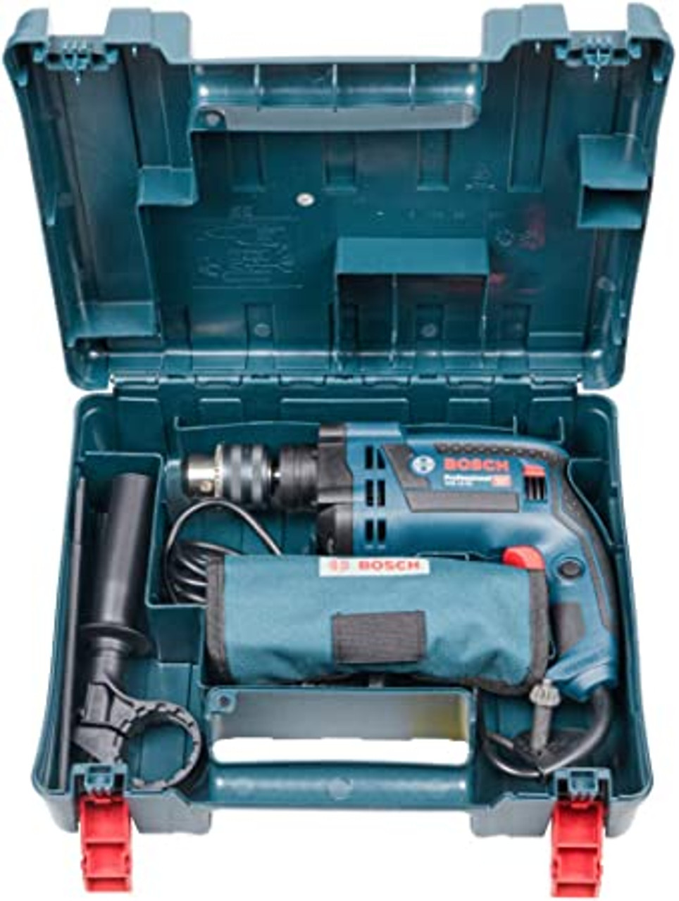

Taladro percutor

Equipo que hace girar una broca y puede incorporar percusión para perforar materiales duros. Se utiliza en instalaciones, reparaciones y trabajos de montaje, con brocas adecuadas para cada superficie.